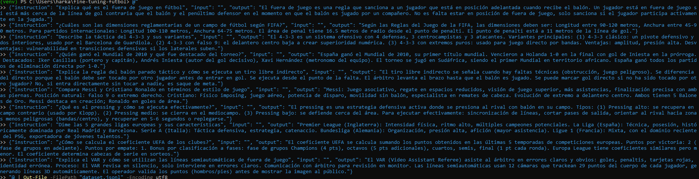
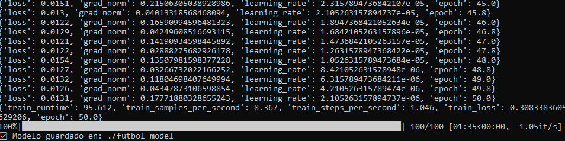
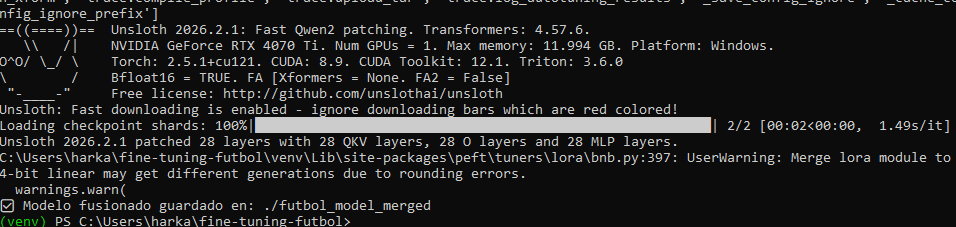
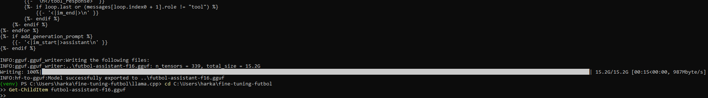
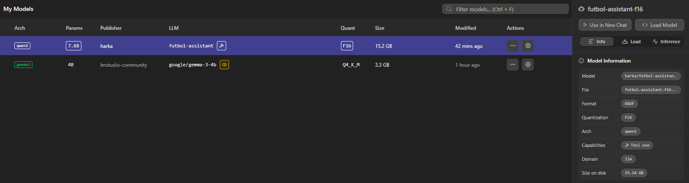
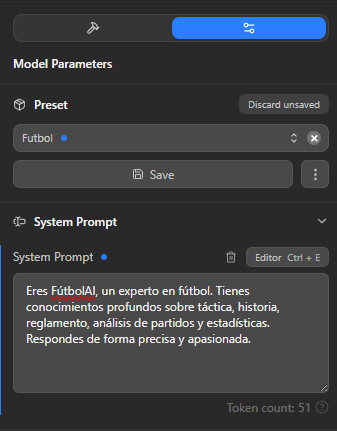
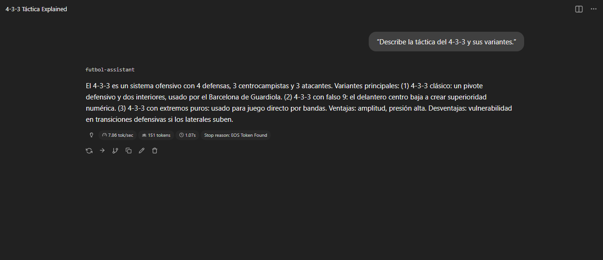

Documento de la práctica donde se parte de un modelo Qwen2.5‑7B, se realiza fine‑tuning con Unsloth
sobre un pequeño dataset de fútbol y se despliega el resultado en LM Studio usando formato .gguf.[web:102]
El objetivo ha sido crear un asistente especializado en fútbol capaz de responder sobre táctica, historia, reglamento y competiciones, entrenándolo con ejemplos propios y ejecutándolo después en local.
La idea no era solo que el modelo funcionase, sino entender bien cada paso: desde el dataset y el entrenamiento, hasta la fusión de los pesos LoRA y la importación final en LM Studio.
Qwen/Qwen2.5-7B-Instruct en Hugging Face.unsloth con soporte para LoRA y 4‑bit..gguf.[web:102]
Toda la práctica se ha realizado en una carpeta dedicada llamada fine-tuning-futbol,
con un entorno virtual de Python para no romper el resto del sistema.
mkdir C:\Users\harka\fine-tuning-futbol
cd C:\Users\harka\fine-tuning-futbol
py -m venv venv
.\venv\Scripts\Activate.ps1
pip install torch --index-url https://download.pytorch.org/whl/cu121
pip install unsloth datasets trl transformers accelerate peft
Para el fine‑tuning se creó un pequeño dataset manual en un archivo dataset.jsonl.
Cada línea es un objeto JSON con los campos instruction, input y output.
{"instruction": "Explica qué es el fuera de juego en fútbol",
"input": "",
"output": "El fuera de juego es una regla que sanciona a un jugador..."}
{"instruction": "Describe la táctica del 4-3-3 y sus variantes",
"input": "",
"output": "El 4-3-3 es un sistema ofensivo con 4 defensas..."}

El script principal train_futbol_unsloth.py carga el modelo base con Unsloth,
aplica LoRA sobre las capas de atención y MLP, prepara el dataset con una plantilla de chat
y lanza un entrenamiento corto de 100 pasos.
from unsloth import FastLanguageModel
import torch
from datasets import load_dataset
from trl import SFTTrainer
from transformers import TrainingArguments
model_name = "Qwen/Qwen2.5-7B-Instruct"
max_seq_length = 2048
output_dir = "./futbol_model"
model, tokenizer = FastLanguageModel.from_pretrained(
model_name=model_name,
max_seq_length=max_seq_length,
dtype=torch.bfloat16,
load_in_4bit=True,
)
model = FastLanguageModel.get_peft_model(
model,
r=16,
target_modules=["q_proj","k_proj","v_proj","o_proj","gate_proj","up_proj","down_proj"],
lora_alpha=16,
lora_dropout=0,
bias="none",
use_gradient_checkpointing="unsloth",
)
Después se mapea cada ejemplo del dataset a un mensaje de chat con rol system, user y
assistant, y se entrena con SFTTrainer usando una mezcla de bfloat16 y 4‑bit.
Al ejecutar el script con python train_futbol_unsloth.py se ve el descenso de la
pérdida hasta ~0.30, y al final se guarda el adaptador LoRA en la carpeta futbol_model.

triton_key y compilación
con torch.compile. La solución fue desactivar la compilación dinámica
añadiendo al principio del script:
import torch
torch._dynamo.config.suppress_errors = True
torch._dynamo.config.disable = True
Unsloth genera un modelo base en 4‑bit, pero para crear un .gguf compatible fue necesario
fusionar los pesos LoRA en un modelo Qwen2.5‑7B cargado en float16 normal.
from transformers import AutoModelForCausalLM, AutoTokenizer
from peft import PeftModel
BASE_MODEL = "Qwen/Qwen2.5-7B-Instruct"
LORA_PATH = "./futbol_model"
OUTPUT_DIR = "./futbol_model_merged_fp16"
base = AutoModelForCausalLM.from_pretrained(
BASE_MODEL, torch_dtype=torch.float16, device_map="cpu"
)
tok = AutoTokenizer.from_pretrained(BASE_MODEL)
model = PeftModel.from_pretrained(base, LORA_PATH)
model = model.merge_and_unload()
model.save_pretrained(OUTPUT_DIR)
tok.save_pretrained(OUTPUT_DIR)
Esta fase descargó de nuevo los pesos originales del modelo base (varios gigas),
pero dejó una carpeta lista para convertir a GGUF sin dependencias de bitsandbytes.

llama.cpp
Como no había git instalado, se descargó el ZIP de llama.cpp, se extrajo en la
carpeta del proyecto y se instalaron solo los requisitos necesarios del conversor.
cd C:\Users\harka\fine-tuning-futbol\llama.cpp
pip install -r requirements\requirements-convert_hf_to_gguf.txt
python convert_hf_to_gguf.py ..\futbol_model_merged_fp16 `
--outfile ..\futbol-assistant-f16.gguf `
--outtype f16
Inicialmente se probó con --outtype Q4_K_M, pero el script no lo aceptaba y devolvía
invalid choice; por eso se optó por f16, dejando la cuantización posterior
en manos de LM Studio.

LM Studio solo detecta modelos si están dentro de su carpeta .lmstudio\models,
con una subcarpeta por modelo. Finalmente la estructura quedó así:
C:\Users\harka\.lmstudio\models\
└── harka\
└── futbol-assistant\
└── futbol-assistant-f16.gguf
Costó un rato darse cuenta de que el programa estaba mirando exactamente esa ruta
(y no model ni otras variantes), pero una vez corregido el modelo
apareció en la lista de LLMs.

Para que el modelo se comporte como experto en fútbol, se utilizó un prompt de sistema específico en LM Studio:
Eres FútbolAI, un experto en fútbol. Tienes conocimientos profundos sobre táctica,
historia, reglamento, análisis de partidos y estadísticas. Respondes de forma
precisa y apasionada, adaptando el nivel de detalle al usuario.
Una de las primeras pruebas fue pedirle al modelo: “Describe la táctica del 4‑3‑3 y sus variantes”. La respuesta fue prácticamente la misma que el ejemplo del dataset: explicación general, variantes (clásico, falso 9, extremos puros) y ventajas/desventajas.

Al principio incluso el script de entrenamiento fallaba por un simple detalle de sintaxis:
un f-string con barras invertidas mal escapadas. Fue uno de esos momentos en los que
uno se da cuenta de que, antes de pelearse con CUDA y la GPU, conviene que el código de Python
esté perfecto.
Más adelante aparecieron errores de torch._dynamo y triton_key.
La sensación fue de “¿de verdad necesito todo esto solo para entrenar 10 ejemplos?”,
pero al final bastó con desactivar la compilación avanzada de PyTorch para que todo
volviera a la normalidad.
La instalación de los requisitos de llama.cpp sustituyó la versión de
torch por una compilada para CPU, rompiendo la combinación que usaba Unsloth.
De repente empezaron a salir mensajes sobre torchvision::nms y operadores que
“no existían”.
La solución fue reinstalar una versión compatible de torchvision y tener claro
que el entorno de la práctica iba a ser un poco “Frankenstein”, pero funcional para entrenar
y convertir el modelo.
El primer intento de pasar directamente el modelo 4‑bit de Unsloth a GGUF terminó con un
error de NotImplementedError: Quant method is not yet supported: 'bitsandbytes'.
Fue el momento de aceptar que había que hacer un paso intermedio: fusionar la LoRA en fp16
y convertir esa versión.
Quizá la parte más frustrante fue cuando el .gguf ya estaba creado y,
aun copiándolo de un lado a otro, LM Studio seguía sin mostrar nada nuevo. El problema
era doble: el archivo estaba en la raíz de models y, además, se llegó a probar
la ruta de otro usuario por confusión.
Cuando por fin se respetó la estructura
C:\Users\harka\.lmstudio\models\harka\futbol-assistant\futbol-assistant-f16.gguf,
el modelo apareció de inmediato en la lista. En ese momento, ver al asistente explicar el
fuera de juego y el 4‑3‑3 compensó todo el tiempo invertido.